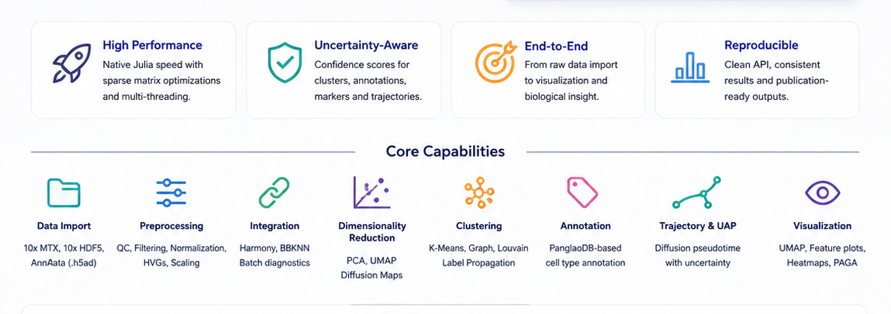
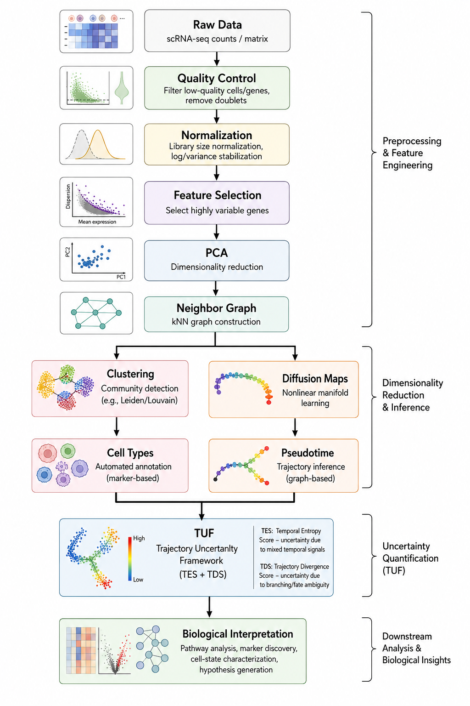

SiCell.jl
A high-performance Julia framework for single-cell RNA sequencing analysis and trajectory uncertainty quantification.
SiCell.jl is a Julia-native toolkit for end-to-end single-cell transcriptomics analysis. It provides efficient implementations of core scRNA-seq workflows including preprocessing, dimensionality reduction, clustering, differential expression, trajectory analysis, and biological interpretation.
In addition to a complete analysis workflow, SiCell.jl introduces the Trajectory Uncertainty Framework (TUF), a novel methodology that decomposes trajectory uncertainty into two complementary components:
- Temporal Entropy Score (TES) — quantifies local temporal inconsistency and cellular state mixing.
- Trajectory Divergence Score (TDS) — quantifies directional ambiguity and potential lineage divergence.
Together, TES and TDS provide a new perspective on cellular plasticity, transitional states, and developmental complexity.
Why SiCell.jl?
Single-cell datasets continue to increase dramatically in scale and complexity. SiCell.jl leverages Julia's performance-oriented design to enable fast, memory-efficient, and reproducible analysis of large single-cell datasets.
Key Features
🚀 High-Performance Data Processing
- Native support for 10x Genomics, AnnData (.h5ad), and 10x HDF5 (.h5) formats.
- Efficient sparse matrix computations.
- Multi-threaded implementations of computationally intensive operations.
- Scalable workflows designed for modern single-cell atlases.
🔬 Complete Single-Cell Analysis Workflow
Preprocessing
- Quality control metrics and filtering.
- Library-size normalization.
- Highly variable gene selection.
- Feature scaling.
Batch Correction and Integration
- Harmony integration.
- BBKNN batch correction.
Dimensionality Reduction
- Principal Component Analysis (PCA).
- UMAP.
- Diffusion Maps.
Clustering
- Graph-based Louvain clustering.
- K-means clustering.
- Efficient K-nearest-neighbor graph construction.
🧬 Cell Identity and Differential Expression
Cell Type Annotation
- Marker-based annotation using PanglaoDB.
- Jaccard similarity scoring for robust cell identity assignment.
Differential Expression
- Fast Wilcoxon rank-sum testing.
- Multiple testing correction.
- Automated marker gene discovery.
🌱 Trajectory Analysis and Trajectory Uncertainty Framework (TUF)
SiCell.jl provides graph-based trajectory inference using diffusion pseudotime and introduces the Trajectory Uncertainty Framework (TUF).
Unlike conventional pseudotime methods that only provide an ordering of cells, TUF quantifies the local uncertainty surrounding each cellular state.
Temporal Entropy Score (TES)
TES measures how heterogeneous the developmental states are within a cell's local neighborhood.
High TES indicates:
- Temporal mixing.
- Transitional cellular states.
- Increased local heterogeneity.
Trajectory Divergence Score (TDS)
TDS measures disagreement among forward developmental directions.
High TDS indicates:
- Lineage bifurcation.
- Multiple possible developmental directions.
- Increased trajectory ambiguity.
TUF is independent of the trajectory inference algorithm and can be applied to pseudotime estimates generated by different methods.
🎨 Visualization
SiCell.jl includes publication-quality visualization tools:
- UMAP and PCA embeddings.
- Feature expression plots.
- Violin plots.
- Volcano plots.
- Trajectory uncertainty maps.
- TES/TDS visualization.
- PAGA-style trajectory graphs.
Features Overview

Overview of the SiCell.jl capabilities
Installation
Install directly from GitHub:
using Pkg
Pkg.add(url="https://github.com/Sizerta/SiCell.jl.git")Load the package:
using SiCellQuick Start
using SiCell
# Load data
obj = read_h5ad("dataset.h5ad")
# Preprocessing
calculate_qc_metrics!(obj)
filter_cells!(obj)
normalize_data!(obj)
find_variable_features!(obj)
# Dimensionality reduction
run_pca!(obj)
find_neighbors!(obj)
run_umap!(obj)
# Clustering
run_graph_clustering!(obj)
# Trajectory analysis
run_diffusion_map!(obj)
run_pseudotime!(obj, root_cell, method="graph")
# Compute trajectory uncertainty
trajectory_uncertainty!(obj)
# Visualization
trajectory_uncertainty_plot(obj)Analysis Pipeline

Overview of the SiCell.jl Analysis Pipeline
Design Principles
SiCell.jl is built around three central principles:
⚡ Performance First
Efficient algorithms optimized for large-scale single-cell datasets.
🧬 Biological Insight
Methods designed to reveal meaningful cellular states, transitions, and regulatory programs.
🟣 Julia Native
A clean, idiomatic Julia API with minimal overhead and direct access to high-performance scientific computing.
Documentation
Comprehensive tutorials, examples, and API documentation are available in the project documentation.
Citation
If you use SiCell.jl in your research, please cite:
SiCell.jl: A Julia framework for single-cell analysis and trajectory uncertainty quantification.
(Manuscript in preparation.)
Related Software
Trajectory Uncertainty Framework (TUF) is also available as a Python package compatible with Scanpy/AnnData workflows.
Contributing
Contributions, bug reports, feature requests, and discussions are welcome. Please open an issue or submit a pull request.
License
SiCell.jl is released under the MIT License.